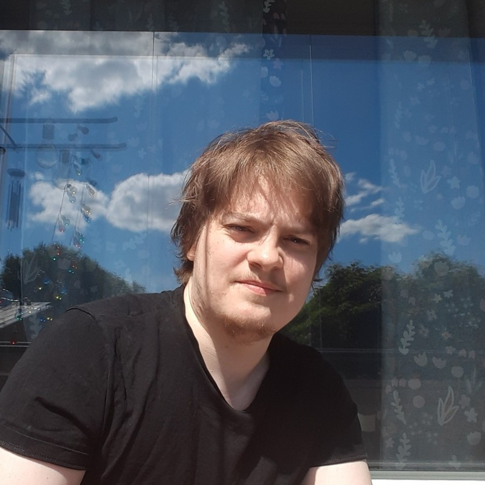

Hi, I'm Arttu Kangas, and this is my web-CV!
I am a master student of Computer Science at University of Helsinki. I'm looking for a full time job as a fullstack developer. Read more to get to know me, and feel free to contact me via LinkedIn or by email at arttu.kangas@helsinki.fi
Although I don't yet have actual work experience as a programmer, I already have a strong set of fullstack developer skills:
The best way to get a sense of my fullstack skills is to check out this web app I've built for practicing conjugation of Spanish verbs. It uses most of the above mentioned techs, including TypeScript, React and Express.
I have also programmed with other languages and technologies in my studies or free time, such as Java, Rust and Python. Here are some of the other projects I've built:
In 2021, I worked at University of Helsinki as a course assistant on the "software production project" -course, where I guided a group of students in their Scrum-project.
2021-2022 I worked as a teacher for Kodarit, teaching coding and game design to children. The experience was challenging, rewarding, and fun. I hope to get to teach again later on in my career.
I speak native Finnish and fluent English. I also understand a little Spanish and Swedish.
I have now studied towards Master's degree in Computer Science for a year, but I would like to get into work life and hopefully continue studies later. I would like a full-day job, preferably in Helsinki, that would let me apply at least some of my fullstack skills and challenge me further. I am always open to learn more and new technologies.
I appreciate a work environment where I am a part of a team that can work in a relaxed manner, but also strives to improve its work methods. I like an open culture where I can get feedback, and also give it.